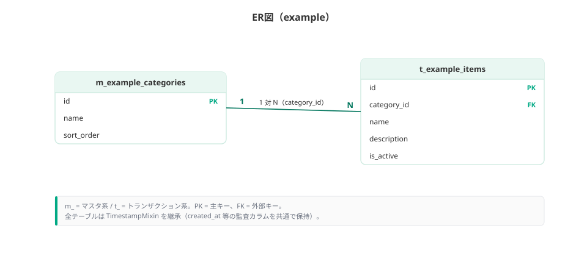

02 基本設計 · 05/07
データベース論理設計書
おうち掃除ログのエンティティと Turso 物理テーブルを定義する。正本は src/lib/db/schema.ts。
確定メモ
DB は Turso（libSQL）+ Drizzle ORM。ローカルは turso dev --db-file local.db。スキーマ適用は npm run db:push。派生値は永続化しない。
永続化方針
- エンジン: Turso / libSQL（SQLite 互換）
- アクセス: Drizzle ORM（
@libsql/client） - 所有境界:
tasks.user_id→users.id - 削除: ユーザー削除時 cascade。タスク削除時 task_logs cascade
- 派生値（lastDone / elapsedDays / ratio / nextDue / state）はドメイン層で毎回計算
命名規則
| 区分 | 規約 | 例 |
|---|---|---|
| テーブル | snake_case 複数形 | tasks, task_logs, users |
| カラム | snake_case | cycle_days, done_date, user_id |
| TS プロパティ | camelCase（Drizzle） | cycleDays, doneDate |
| 日付（実施） | text ISO | "YYYY-MM-DD" |
| タイムスタンプ | integer mode timestamp | created_at |
| id | text（nanoid 等） | tasks / task_logs は nanoid |
論理 ER
User 1 ── * Task 1 ── * TaskLog
User
├ id, name, email, email_verified, image
└ created_at, updated_at
Task
├ id (PK)
├ user_id (FK → users.id, cascade)
├ name
├ cycle_days (1–365)
├ created_at, updated_at
└ INDEX (user_id)
TaskLog
├ id (PK)
├ task_id (FK → tasks.id, cascade)
├ done_date "YYYY-MM-DD"
├ created_at
└ UNIQUE (task_id, done_date)
INDEX (task_id)
Better Auth 付帯:
sessions (user_id), accounts (user_id), verifications
クリックで拡大
エンティティ一覧
| エンティティ | テーブル | 区分 | 概要 | 主な関連 |
|---|---|---|---|---|
| User | users | 認証 | Google ログイン利用者 | Task 1:* |
| Session | sessions | 認証 | Better Auth セッション | User N:1 |
| Account | accounts | 認証 | OAuth プロバイダ紐付け | User N:1 |
| Verification | verifications | 認証 | Better Auth 検証用 | — |
| Task | tasks | ドメイン | 掃除タスク | User N:1, TaskLog 1:* |
| TaskLog | task_logs | ドメイン | 実施日1件 | Task N:1。UNIQUE(task_id, done_date) |
属性詳細（物理）
users
| カラム | 型 | 必須 | 説明 |
|---|---|---|---|
| id | text PK | 必須 | ユーザー ID |
| name | text | 必須 | 表示名 |
| text unique | 必須 | メール | |
| email_verified | integer bool | 必須 | 既定 false |
| image | text | 任意 | アバター URL |
| created_at / updated_at | integer timestamp | 必須 | 監査 |
tasks
| カラム | 型 | 必須 | 説明 |
|---|---|---|---|
| id | text PK | 必須 | nanoid |
| user_id | text FK | 必須 | → users.id ON DELETE CASCADE。INDEX |
| name | text | 必須 | タスク名 |
| cycle_days | integer | 必須 | 目安周期 1–365（アプリ層で clamp） |
| created_at / updated_at | integer timestamp | 必須 | 作成・更新 |
task_logs
| カラム | 型 | 必須 | 説明 |
|---|---|---|---|
| id | text PK | 必須 | nanoid |
| task_id | text FK | 必須 | → tasks.id ON DELETE CASCADE。INDEX |
| done_date | text | 必須 | YYYY-MM-DD。未来日はアプリ層で拒否 |
| created_at | integer timestamp | 必須 | 記録作成時刻 |
制約: UNIQUE INDEX task_logs_task_date_uidx ON (task_id, done_date)
sessions / accounts / verifications
Better Auth の Drizzle アダプタが要求する標準テーブル。詳細カラムは schema.ts を正とする（token unique、expires_at、provider_id 等）。
派生値（非永続）
| 属性 | 算出（domain/task.ts） |
|---|---|
| lastDone | logs の最新日。なければ null |
| elapsedDays | today − lastDone。未記録 null |
| ratio | logs 空 → 1.0 / それ以外 elapsedDays / cycleDays |
| nextDue | lastDone + cycleDays。未記録 null |
| state | ratio ≥ 1.5 late / > 1 warn / else normal |
| doneToday | lastDone === today |
正規化方針
- Task / TaskLog はリレーション分離（第3正規形に近い）。
- 実施日の重複は DB 一意制約で保証。
- ユーザー横断の共有テーブルは MVP にない。
おうち掃除ログ 設計書 · インデックス